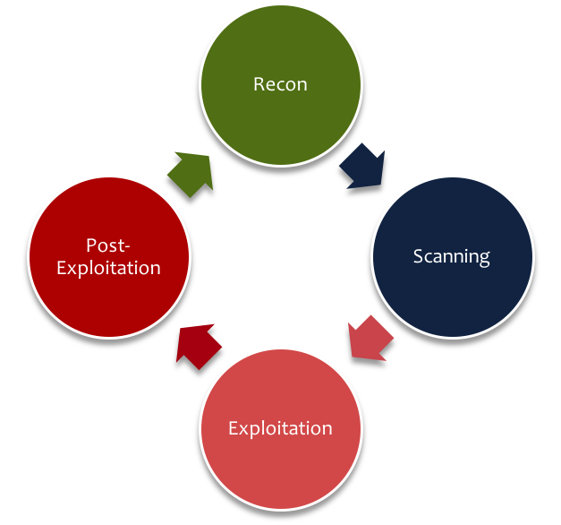

# IMESEC ## Metasploit 101 #### 11/08/17
## Referências * [Metasploit Unleashed](https://www.offensive-security.com/metasploit-unleashed/) * [Penetration Testing: A Hands-On Introduction to Hacking](https://www.amazon.com/Penetration-Testing-Hands-Introduction-Hacking/dp/1593275641) * XP
## WTF? * God of Frameworks * Opensource (Rapid7) * 1000+ exploits * 260+ payloads * 460+ auxiliares
## Fases do Pentest 
# Arquitetura
<img data-src="img/msfarch2.png">
## Bibliotecas * REX * msf::core * msf::base * msf::UI
## Módulos * Auxiliary * Encoder * Nops * Exploit * Payload
## Payloads, encoders, Nops * Payload é um código executado remotamente * Encoders garantem que os payloads vão chegar ao destinatário * Nops mantêm os tamanhos dos payloads consistentes
## Exploit * Módulos que usam payloads * Um exploit sem payload é um módulo auxiliar
## Interfaces * msfcli (deprecated) * msfconsole * msfweb * Armitage (GUI)
# Preparação do ambiente * README.md